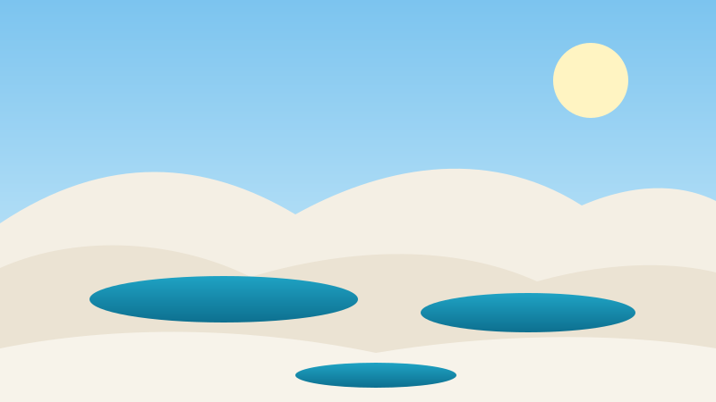

Atrações imperdíveis
Lagoas, rios, praias e povoados que valem a visita.
Dunas brancas que se estendem até o horizonte e, entre elas, lagoas de água doce e cristalina. Este guia reúne o que você precisa saber para planejar sua viagem a um dos cenários mais impressionantes do Brasil.
O Parque Nacional dos Lençóis Maranhenses fica no litoral norte do Maranhão e foi criado em . A área protegida é administrada pelo ICMBio.
Em , o parque foi inscrito na lista de Patrimônio Mundial da UNESCO.

As lagoas não são ligadas ao mar. Elas se enchem com a água da chuva, que fica retida entre as dunas porque há uma camada de solo menos permeável logo abaixo da areia.
Por isso a época da visita faz toda a diferença: no período seco, muitas lagoas ficam rasas ou desaparecem.
O Maranhão é terra do poeta Gonçalves Dias, autor de um dos poemas mais conhecidos da literatura brasileira:
Minha terra tem palmeiras,
Onde canta o Sabiá;
— Gonçalves Dias, Canção do Exílio ()
Lagoas, rios, praias e povoados que valem a visita.
Passeios comparados por duração, nível de esforço e cidade de saída.
Envie seus dados e receba uma sugestão de roteiro personalizada.